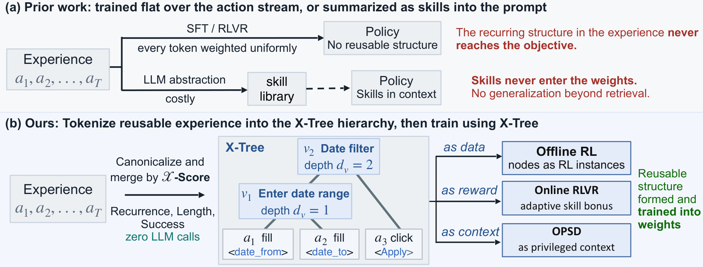
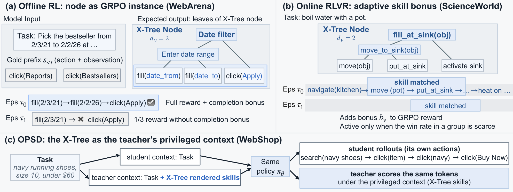
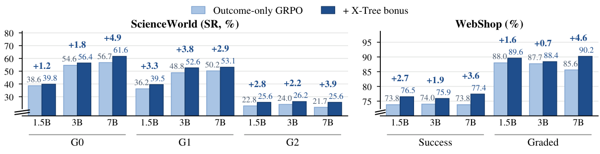
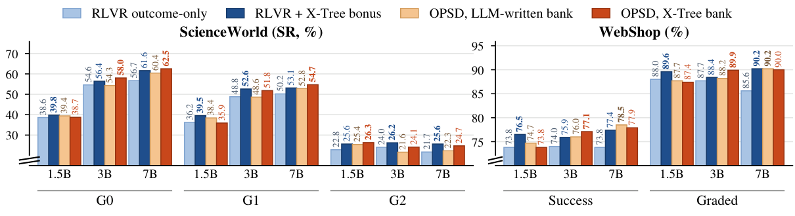

X‑Tree: Tokenizing Reusable Experience
for Efficient Agent Generalization
1University of Waterloo · 2Duke University · 3National University of Singapore
Contact: sitao.cheng@uwaterloo.ca · victor.zhong@uwaterloo.ca
TL;DR X-Tree captures how a reusable skill is composed from sub-procedures. It is mined from agent trajectories with zero LLM calls, and it guides efficient training in three settings: as training instances for offline RL, as an adaptive bonus for online RLVR, and as privileged context of the self-teacher for OPSD.
Read the abstract
Multi-step agents are trained on flat action streams. SFT and RLVR weight every token uniformly and ignore the sub-procedures that recur across tasks, the hierarchy that lets humans plan top-down from reusable routines. This structure sits unused, and flat training uses each scarce trajectory less fully than its content allows. Recent agents do use that structure, but only as LLM-written skills in context, never in the weights, so their gains do not generalize beyond retrieval.
We instead recover this hierarchy from the data itself and train on it, with no LLM calls. Following text tokenizers, which build a vocabulary by counting alone, we score action spans by reusability and merge canonicalized actions into a reusable eXperience tree (X-Tree). Each X-Tree node captures how a frequent and success-bearing skill is composed from sub-skills, guiding efficient generalization.
We integrate X-Tree into three training settings: offline RL, with each node as a training instance; online RLVR, with an adaptive skill bonus; and on-policy self-distillation, with X-Tree as the self-teacher's privileged context. Across WebArena, ScienceWorld and WebShop at three model scales, X-Tree improves over standard recipes at matched data and budget by up to 4.5% SR on WebArena, 5.8% SR on ScienceWorld and 4.1% success on WebShop.
Real trajectories, tokenized by the X‑Tree
Each example is a successful trajectory from a training corpus, with the tree mined from that corpus. Click a node to see the steps it covers and how often it recurs across the corpus. Drag the merge depth to replay the compression.
Merge depth
The tree drawing needs a wider screen. The bands, the merge stream and the node card show the same structure.
Where X‑Tree enters training
The same tree is used three ways. Step through each one to see when a node is triggered and what it changes.
Mine the hierarchy (X‑Tree) latent in the data and guide training with X‑Tree

Tokenizing reusable experience
A text tokenizer merges co-occurring characters into a vocabulary. X-Tree applies the same idea to actions, with two changes: actions are first made comparable, and merges are chosen by how reusable the result is.
Canonicalize
Each raw action becomes a typed token verb⟨role⟩. Element ids and object names are stripped into slots, so structurally identical actions share a symbol.
Score by X-Score
A pair of adjacent symbols is reusable when it recurs, when it is long, and when it appears in successful episodes. The pair with the highest score merges first.
Merge into a tree
A merge must also compress the corpus. Merging repeats until no pair passes or a cap is reached. Each node's depth is one more than its deeper child.

Same data, same budget, more from each trajectory
Offline RL on WebArena: the tree drives the gain, not extra compute
With the same trajectories and no environment during training, offline RL on X-Tree nodes improves most on the procedure-heavy sites. Two more SFT epochs, random spans or an outcome-only reward recover little of it.
| Method | gitlab | shopping | admin | map | wiki | All | |
|---|---|---|---|---|---|---|---|
| Without RL | |||||||
| Qwen2.5-7B-Instruct (base) | 6.4 | 7.8 | 7.7 | 2.4 | 9.0 | 2.4 | 6.5 |
| Go-Browse (SFT-Full, 2 epochs) | 16.8 | 21.7 | 22.9 | 16.4 | 10.4 | 7.1 | 18.4 |
| with 4 epochs (matched compute) | 17.5 | 19.4 | 24.4 | 16.1 | 13.4 | 11.9 | 18.8 |
| SFT + offline RL | |||||||
| Offline RL, outcome reward | 15.5 | 23.4 | 23.1 | 15.2 | 7.5 | 14.3 | 18.2 |
| Offline RL, random span | 18.4 | 20.9 | 26.6 | 14.7 | 11.9 | 14.3 | 19.5 |
| SFT + offline RL + X-Tree | |||||||
| X-Tree, plain mixing | 16.1 | 24.5 | 25.4 | 19.9 | 14.4 | 23.8 | 20.7 |
| X-Tree, depth curriculum | 17.8 | 21.5 | 28.6 | 20.8 | 12.4 | 23.8 | 21.2 |
| X-Tree, full recipe | 22.0 | 26.6 | 29.3 | 18.8 | 10.4 | 14.3 | 22.9 |
Online RLVR: X‑Tree helps at every scale, including held-out tasks
The adaptive bonus improves outcome-only GRPO on seen and held-out ScienceWorld tasks and on WebShop success and graded score, at 1.5B, 3B and 7B. It helps most when the verifier signal is scarce.

OPSD: a mined tree teaches as well as an LLM-written skill bank
As the self-teacher's privileged context, the X-Tree rendering performs on par with skill banks written by gpt-oss-120b and GPT-o3, with no LLM calls. Its gain over outcome-only RL grows with model scale.

BibTeX
@article{cheng2026xtree,
title = {X-Tree: Tokenizing Reusable Experience for
Efficient Agent Generalization},
author = {Cheng, Sitao and Yin, Xunjian and Sun, Zhiyuan and
Li, Yuxuan and Zhou, Ruiwen and Jian, Xiangru and
Zhong, Victor},
journal = {arXiv preprint},
year = {2026}
}